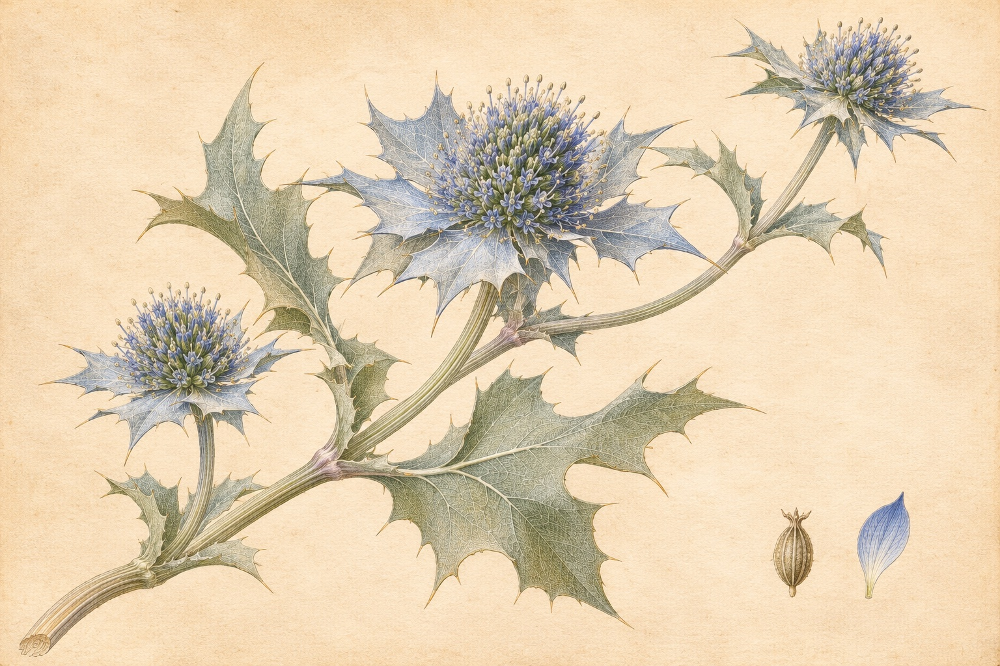

Field essay / Botany
Gardens at the edge
Notes on planting for a changing coast.

On the edge of the dunes, sea holly grows where the wind strips the soil bare. Its deep roots anchor the plant in shifting sand. The silver leaves turn the colour of the water at dusk.
[1] Eleanor Ward, Shoreline notebook, p. 18.